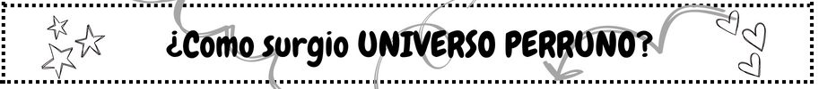
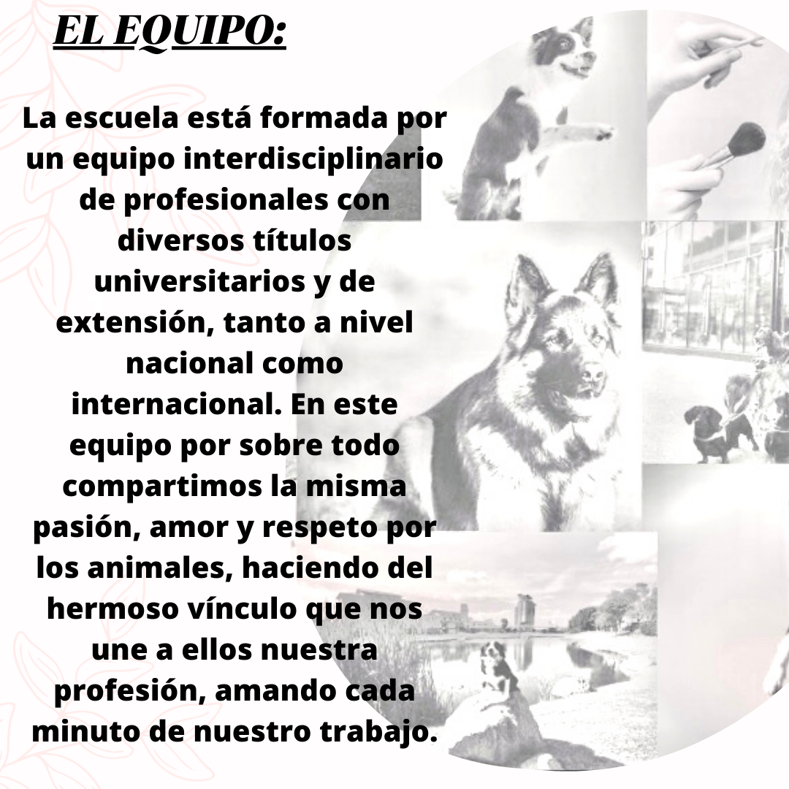
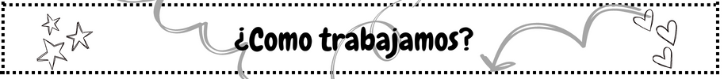
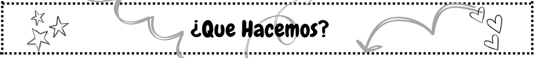
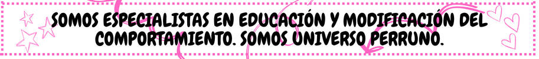

Mi nombre es Nadia Amaro, soy la Directora de Universo Perruno comparto mi vida con perros, entre otra gran cantidad de animales. Siempre fui una apasionada de la naturaleza y fanática de los perros. De muy chica tuve la oportunidad de tener como mascotas y amigos a más de 10 perros entre ellos Ovejeros, Caniche, Basset Hound y varios mestizos. Fascinada por su mundo, comencé desde muy chica a comprender su lenguaje y a interpretar cada uno de sus movimientos volviéndome de cada perro que conocía una gran amiga. El vínculo y la conexión que me une a los perros fue siempre muy especial. Hace unos años, capacitándome en diversas instituciones tanto locales como extranjeras di formalidad a mi pasión y es así como nació Universo Perruno.


Nos enfocamos en mejorar la comunicación y el vínculo de las familias con sus perros, quienes son parte de ellas, enriqueciendo así su calidad de vida. Para esto, utilizamos técnicas y herramientas alineadas a la tenencia responsable, rechazando el maltrato animal, técnicas con aval científico sustentadas por nuestra experiencia, conocimientos y profesionalismo.

Hace unos años incorporamos a nuestros servicios seminarios para todo público sobre comportamiento Canino dictados por nuestros expertos. Así como también, cursos de capacitación sobre Salud y Bienestar y resolución de problemas de comportamiento para adiestradores o educadores formados que deseen seguir especializándose y cursos de Primeros auxilios, salud y RCP dictados por nuestro Veterinario.
